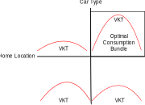
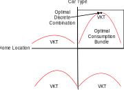

Lecture 1 - Microeconomics
ENCI707: Engineering Demand and Policy Analysis
Outline
- Microeconomic theory of demand
- Quantitative analysis of consumer demand
- Concept of utility
- Direct/indirect utility
- Demand function
- Functional forms of demand function
Introduction
Microeconomics
- Branch of economics dealing with behaviour of economic agents including:
- Consumers
- Labour force (workers)
- Firms
- Investors
- Markets: Interactions among all of the above
- Demand-Supply:
- Demand function representing behavior of users/agents
- Supply function representing level-of-service, congestion, & behavior of service providers
- Market clearance = demand & supply equilibrium
Demand-Supply Relationship
- Short-term demand-supply: Ex. Roadway link at an instant
- Long-term demand-supply: Ex. Residential housing
- Equilibrium

Shifting Curves
Comparative Statics
- Create a model of market behavior:
- Explain consumer & firm choices as functions of exogenous variables – e.g., income & government policy
- Develop scenarios
- Changes in exogeneous variables
- Derive changes in the endogenous variables
Comparative Statics Example
- The market for taxi service:
- Supply function: QS = – 125 + 125P
- Demand function: QD = 1000 – 100P
- Where does the market clear?
- What happens if demand shifts such that now QD = 1450 – 100P?
Comparative Statics Example - SOLUTION
Concept of Utility
- Utility: a measure of benefit or attractiveness of alternative courses of action
- Assumption that people choose action that maximizes utility (profit) and minimizes disutility (cost)
- An abstract/latent concept that gives only ordinal ranking:
- No inherent meaning
- No generic unique function
- Unaffected by monotonic transformation
- Utility measures:
- Direct utility: f(quantity of consumption)
- Indirect utility: f(utility of consumption)
Consumption Set: Bundle of Choices
- Derive demand function based on concept of utility maximization subject to budget and constraints
- Consumption set [X]: a possible bundle of choices (goods: real or virtual)
- Consumer has preferences over the consumption set
- Properties of a consumption bundle (of the mathematical function defining bundle):
- Complete, reflexive, transitive, continuous, and convex
Properties of a Consumption Bundle
Utility Function & Consumption Set
Utility Function: Diminishing Marginal Utility of Consumption
Consumption Demand
Demand Functions
Marshallian Demand Function
Definition of Goods
Definition of Goods
Hicksian Demand Function
Marshallian & Hicksian Demand
Direct Utility Maximization
Direct Utility Maximization
Indifference Curves
Marginal Rate of Substitution (MRS)
Envelope Theorem
Marginal Utility of Income (Application of Envelope Theorem)
Indirect Utility Function
Indirect Utility and Demand
Properties of Indirect Utility Function
Roy’s Identity (Another Application of Envelope Theorem)
Continuous Demand
Functional Forms for Demand/Production/Expenditure
Cobb-Douglas Direct Utility Function
Cobb-Douglas Direct Utility Function
Cobb-Douglas Direct Utility Function
Elasticity of Substitution
Cobb-Douglas Utility Function
Cobb-Douglas Utility Function
Roy’s Identity & Cobb-Douglas Function
Constant Elasticity of Substitution (CES) Direct Utility Function
- General specification: \(U = \left(\sum_i \alpha_i q_i^{\rho}\right)^{1/\rho}\)
- For an example with two alternatives: \(U = \left(\alpha_1 q_1^{\rho} + \alpha_2 q_2^{\rho} \right)^{1/\rho}\)
- A flexible function that can represent various forms of indifference curves (demand functions) based on the value of \(\rho\)
CES Direct Utility Function
\(MRS = - \frac{\alpha_1}{\alpha_2}\left(\frac{q_2}{q_1}\right)^{\rho-1}\)
- Elasticity of subsitution \(ln(|MRS|) = ln\left(\frac{\alpha_1}{\alpha_2}\right) + (\rho-1)ln\left(\frac{q_2}{q_1}\right)\)
\(ln\left(\frac{q_2}{q_1}\right) = \frac{1}{\rho-1}ln(|MRS|) + \frac{1}{\rho-1}ln\left(\frac{\alpha_2}{\alpha_1}\right)\)
\(\sigma = \frac{d ln\left(\frac{q_2}{q_1}\right)}{d ln(|MRS|)} = \frac{1}{\rho-1}\)
CES Direct Utility Maximization
Consier a simple two alternative example \(U = (\alpha_1 q_1^{\rho} + \alpha_2 q_2^{\rho})^{\frac{1}/{\rho}}\)
Using Lagrangian function and FOC for \(q_1\) and \(q_2\) \(q_1 = q_2(\frac{p_1/\alpha_1}{p_2/\alpha_2})^{\frac{1}{\rho-1}}\) & \(q_2 = q_1(\frac{p_2/\alpha_2}{p_1/\alpha_1})^{\frac{1}{\rho-1}}\)
Substituting either result into the budget constraint, optimal demands are \(q_1^* = \frac{I(p_1/\alpha_1)^{\frac{1}{\rho-1}}}{p_1(\frac{p_1}{\alpha_1})^{\frac{1}{\rho-1}}+p_2(\frac{p_2}{\alpha_2})^{\frac{1}{\rho-1}}}\) & \(q_2^* = \frac{I(p_2/\alpha_2)^{\frac{1}{\rho-1}}}{p_1(\frac{p_1}{\alpha_1})^{\frac{1}{\rho-1}}+p_2(\frac{p_2}{\alpha_2})^{\frac{1}{\rho-1}}}\)
CES Indirect Utility Maximization
- For general case, optimal demand is
\(q_j^* = \frac{I(p_j/\alpha_j)^{\frac{1}{\rho-1}}}{\sum_k p_k (\frac{p_k}{\alpha_k})^{\frac{1}{\rho-1}}}\)
- Indirect utility function at optimal direct utility level \(V = \left(\sum_k \alpha_k \left(\frac{I(\frac{p_k}{\alpha_k})^{\frac{1}{\rho-1}}}{\sum_k p_k (\frac{p_k}{\alpha_k})^{\frac{1}{\rho-1}}}\right)^{\rho}\right)^{\frac{1}{\rho}} = \frac{I}{\sum_k p_k (\frac{p_k}{\alpha_k})^{\frac{1}{\rho-1}}}\left(\sum_k(\alpha_k^{\frac{1}{\rho}}(\frac{p_k}{\alpha_k})^{\frac{1}{\rho-1}})^{\rho}\right)^{\frac{1}{\rho}}\)
Translog Demand/Cost Function
- Translog is a quadratic, logarithmic specification of an indirect utility function written in terms of expenditure-normalized prices
- Normalizing each price by dividing by total expenditure (income) imposes homogeneity
- Logarithmic indirect utility (or cost) function is
\(ln(V) = \alpha_0 + \sum_j \alpha_j ln(\frac{p_j}{I}) + \frac{1}{2}\sum_j\sum_k \beta_{jk} ln(\frac{p_j}{I}) ln(\frac{p_k}{I})\)
- Optimum quantity demands are derived using a logarthmic version of Roy’s Identity
Almost Ideal Demand System (AIDS)
- AIDS is a combination of Cobb-Douglas and translog demand functions, describing an expenditure function necessary to attain a specific utility level at a given price
- Typical form is
\(ln(V) = \alpha_0 + \sum_j \alpha_j ln(p_j) + \frac{1}{2}\sum_j \alpha_j ln(p_j) + \frac{1}{2}\sum_j\sum_k \gamma_{jk} ln(p_j) ln(p_k) + \beta_o \prod_j p_k^{\beta_k}\)
Discrete Demand
Microeconomic Theory of Discrete Goods
The consumer
- Selects the quantities of continuous goods: \(Q = (q_1,\dots,q_L)\)
- Chooses an alternative in a discrete choice set \(i = 1,\dots,j,\dots,J\)
- Discrete decision vector \((y_1,\dots,y_J), y_j \in {0,1}, \sum_j y_j = 1\)
Note
- In theory, an alternative describes the combination of all possible choices made by a consumer
- In practice, the choice set will be restricted for tractability
Example
Choices
- Home location: discrete choice
- Car type: discrete choice
- Number of km driven per year: continuous choice

Utility Maximization
\(U(Q,y,\tilde{z}^Ty,\tilde{z}^T,\theta)\)
- Q are quantities of continuous good
- y is the discrete choice
- \(\tilde{z}\) are the K attributes of the J discrete alternatives
- \(\tilde{z}y\) are the attributes of the chosen alternative
- \(\theta\) is a vector of parameters
Optimization Problem
\(\max_{Q,y} U(Q,y,\tilde{z}^Ty)\)
Suject to
\(p^T Q + c^T y \le I\)
\(\sum y_j = 1\)
\(y_j \in {0,1} \forall j\)
Why is it impossible to derive a direct demand function?
Solution to Optimization Problem
- In a mixed integer programming problem, need to condition on the discrete variables to obtain continuous demand functions
- Continuous demand functions can be differentiated to obtain optimality conditions
- Various solution algorithms exist: genetic algorithm, branch and bound, etc.
Solution to Optimization Problem

Solution to Optimization Problem
Solution to Optimization Problem
Application to Demand Analysis
Demand Modelling: Application of Utility Theory
- Demand models are descriptive, not prescriptive
- Observed (revealed or stated) demand used to develop demand models:
- Observed demand is optimal demand.
- Utility theory used to specify the demand model that is supposed to predict the observed (optimal) demand
- Observed information contains measurement (epistemic) and random (aleatoric) uncertainties, so probability theory must be used to specify a stochastic model
- Econometric model: application of statistics to behavioral/economic data based on a sample of observations
Observing/Modelling Demands
- Measurement of demands are through specification of random variables
- Type of demand measurement (variable) defines the nature of corresponding econometric model
- Underlying theory of microeconomics allows for meaningful interpretation of model parameters and results
- For example:
- Cobb-Douglas theory, CES, translog, AIDS are used in aggregate travel demand models
- CES indirect utility specification forms the basis for many discrete choice models (e.g., GEV models), time/resource allocation models, etc.
Observing Demands
- Variable types/measurements of travel demand:
- Cardinal numbers or ordinal measurements
- Quantitative or qualitative
- Discrete, continuous, count, or ordinal
Modelling Travel Demands
- Data (revealed/stated preferences): data do not provide answers themselves
- We need models and visualizations to give context and structure
- Identify underling theory to specify model of interest
- Two types of models:
- Aggregate demand models
- Disaggregate demand/choice models
- In either case, application of econometric techniques is crucial to ensure evidence-based analysis
- Estimation of appropriate model parameters is the critical roadblock!